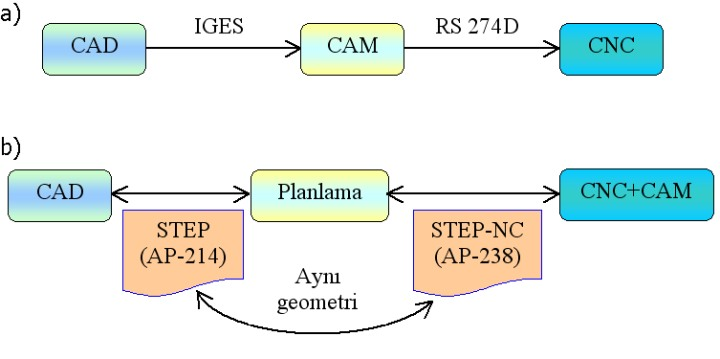

Not: Ýlk defa TurkCADCAM.net Dergisi 1. sayýsýnda (Ocak-Þubat 2006) yer alan bu makale, Ekim 2008'de TurkCADCAM.net Portalý'nda yayýnlanmaya baþlamýþtýr.
Özet
Mevcut CNC tezgahlarýnýn kod standartlarý NC'lerin çýkýþýyla yaklaþýk ayný zamana dayanmaktadýr. Geliþen teknoloji ile birlikte maliyet ve zaman kayýplarýnýn önemli parametreler haline gelmesiyle tasarýmdan imalata kadar geçen sürecin daha hýzlý ve düþük maliyetlerde gerçekleþtirilmesini zorunlu olmuþtur. Bu amaçla son yýllarda CAD/CAM-CNC entegrasyonu üzerine
yeni çalýþmalar yapýlmýþ, daha uygun standartlarýn oluþturulmasý yönünde giriþimlerde bulunulmuþtur. Bu sürecin benzeri CAD geliþimin de yaþanmýþ; ilk zamanlar parçanýn temel komut ve geometriler kullanýlarak gerçekleþtirilmesi yeterli olurken sonralarý ürün planlama ve CAM entegrasyonu da dikkate alýnarak imalata yönelik uygulanmalarla daha da geliþtirilmiþtir.
Giriþ
NC tezgahlarýn yaklaþýk 40 yýl önce baþlayan geliþim sürecinde ISO 6983 standardý bu makinalar için giriþ kodlarýný tanýmlamaktadýr. Bu kodlar; program numarasý, bloklar ve bu bloklarý oluþturan kelimelerden meydana gelmektedir. Oluþturulan kodlar, tezgah eksenlerine göre takým yolunun oluþturulmasýna odaklý parça iþleme programlarýdýr. Baþlangýçta optik veya manyetik kartlarla tezgahlara aktarýlan bu kod standartlarý geliþen teknolojiyle birlikte bilgisayar kullanýlmak suretiyle halen etkin bir þekilde sektörde kullanýlmaktadýr. Tezgah satýcýlarýnýn bu kodlara yardýmcý olmasý amacýyla kendi geliþtirdikleri program parçacýklarý ve makrolar iþlemleri biraz daha hýzlý ve kolay hale getirmektedir [1, 2, 3].
1. CNC Kod Standartlarý
Günümüz modern imalat teknolojilerinde yüzlerce farklý ürün oluþturma teknikleri ve bunlarýn üretilebileceði tezgahlar mevcuttur. Bu farklýlýklarýn aktarým ve dolaþýmda sorun çýkarmamasý için standardizasyonu gerekmektedir. Mekanik parçalar için ürünün tanýmlanmasý ISO 10303 ile standarda baðlanmýþtýr [4]. Üretim için bu bilgilerinin makina veya tezgaha aktarýlmasý gerekmektedir. CNC tezgahlarýnýn çoðu ISO 6983 standardý ile tanýmlanan "G ve M kodlarý" ile programlanmaktadýr. Bu kodlar kullanýlan CAM sisteminde CAD verilerine göre oluþturur.
ISO 6983 standardýnýn bazý kýsýtlamalarý vardýr.
Bunlar;
1- Kodlama, parçanýn iþlenmesi sürecine deðil de takým yolunun tezgah eksenlerine göre hareketine odaklýdýr,
2- Standart kodlamanýn yazým yönüyle ilgili bilgilerini açýklar ancak bu komut satýrlarý bilgi verici deðildir,
3- Tezgah üreticisinin ilave program ve makrolarý saðlamasýna karþýn bu durum ISO 6983 kapsamýnda deðildir.
ISO 14649, CAD/CAM sistemleriyle tezgah arasýndaki veri aktarýmýnda yeni bir yaklaþýmý içermektedir [5]. Ýþleme süreçlerine dayalý, nesne tabanlý iþleme kademelerini öngören yeni bir yaklaþýmý öngörmektedir. Bu kademeler yüksek seviye iþleme adýmlarýný ve süreç parametreleriyle uyuþmaktadýr. CNC'ler iþlem adýmlarýný eksen hareketine ve takým operasyonlarýna çevirmekte kullanýrlar. Bu yeni standardýn en önemli yararlarýndan birsi de ISO 10303'ün veri modellerini kullanabilirliðidir.
ISO 14649'un amaçlarý aþaðýda sýralanmýþtýr.
1. Veri deðiþim ve aktarýmý için mevcut ve muhtemel gelecek ihtiyaçlarý kapsar,
2. ISO 10303'e göre bilgisayarda oluþturulmuþ ürün bilgisinin doðrudan kullanýmýný destekler,
3. CNC'ler için, deðiþimi ve aktarýmý yapýlabilir, iþ parçasý odaklý veri modeli oluþturur.
4. Veri modelinin tanýmlanabilmesi için standardýn, modern programlama dillerinin ve hazýr kütüphanelerin kullanýlabilme olanaðýný saðlar,
5. CNC veri giriþi için uygun kod üretiminden emin olmayý getirir.
Þekil 1: Tasarýmdan üretime imalat çevriminde ISO 14649 standardý
2. CNC programlamada yeni yaklaþým: STEP-NC
CNC programlamadaki en önemli adým STEP-NC standardý olmuþtur. STEP standardýnýn bir aþama sonrasýný ifade eden bu çalýþma ile ürün model bilgisinin doðrudan CNC tezgaha kod olarak çevrilebilmesi amaçlanmýþtýr. Takým yolunun oluþturulmasý için gerekli ara programlarý, G ve M kodlarýný ve post prosesörleri tamamen devre dýþý býrakmayý hedeflemektedir. Böylece operatör veya programcýya dayalý bir imalat sürecinden çok standartlarla tanýmlanmýþ ve ara kademelere girmeyi gereksiz kýlan bir yaklaþým ortaya konulmuþtur. STEP-NC ile bir parçanýn imalatýnda CNC tezgahlar için gerekli tüm bilgi AP 238 formatýnda bir dosyada doðrudan oluþturabilmektedir [6,7].
Mevcut CNC'lerde tasarýmdan imalata kadar geçen süreç, müþteri tarafýndan tasarýmý ve diðer teknik detaylarý içeren çizimleri gerçekleþtirilmiþ bir ürün ya da ürüne ait bir parçanýn ara bir standart veri formatýyla (örneðin IGES) uygun bir CAM yazýlýmýna aktarýlmasý ve burada imalat süreçlerine karar verilip kaldýrýlacak malzeme bölgelerinin tanýmlanmasý sonrasýnda bu bilgilerin kesici takýmýn hareketlerini tanýmlayan G-kodlarýna çevrilmesi ve sonunda da bu G-kodlarýnýn tezgah üreticisinin tanýmladýðý bir "post prosesör" ile RS 274D dosya formatýnda CNC kontrolörlerine gönderilmesi iþlemlerini kapsamaktadýr (Þekil 2a).

Þekil 2: CAD/CAM-CNC entegrasyonunda mevcut ve yeni yaklaþýmlarýn karþýlaþtýrmasý
STEP-NC yaklaþýmda ise parçanýn CAD bilgisini ve gerekli toleranslarýn tanýmlandýðý bir AP214 dosyasý süreç planlamasýna tabi tutulmaktadýr. Bu aþamada imalat için gerekli tüm bilgileri, iþlem adýmlarýný ve takým ihtiyaçlarýný da içeren AP238 dosyasý oluþturulur (Þekil 2b). Bu dosya STEP-NC'de bir parçanýn imalatý için tüm gerekli bilgileri içermektedir. Yeni yaklaþýmda, tasarýmdan imalata tüm aþamalarda % 50'lere varan bir zaman kazanýmý mümkündür [7].
3. CAD/CAM-CNC entegrasyonunda gelecek tahminleri
Geliþen teknolojiyle birlikte yazýda bahsedilen sürecin gelecekte ne gibi deðiþikliklere yok açabileceði aþaðýda deðerlendirilmiþtir.
. CNC'ler daha akýllý sistemler haline gelecektir.
. Post prosesör ihtiyacý ortadan kalkacaktýr.
. CAM sistemleri yeni yaklaþýmlarý destekler bir hale gelecektir.
. CAD sistemleriyle yeni standart formatlarda CNC'lere uygun dosyalarýn oluþturabilmesi mümkün olacaktýr.
. Hali hazýrda çok etkin kullanýlamayan süreç planlama iþlemleri daha etkin bir hal alacaktýr.
. Yeni yazýlým ve standartlarýn zorunlu kýlacaðý daha fonksiyonel ve hassas tezgahlara ihtiyaç olacaktýr.
4. Düþünce ve görüþler
CAD/CAM sistemleri ve CNC tezgahlarýnýn tam olarak entegrasyonuyla, tasarýmdan imalata kadar devam eden süreçteki maliyet ve zaman kayýplarý en aza indirilmiþ olacaktýr. Böylece, geliþen ve hýzla ilerleyen teknolojide ihtiyaç duyulan ürün ve parça ihtiyacý en uygun þekilde karþýlanacak, yeni ürün ve geliþtirmelerin önü daha da açýlacaktýr. Bahsedilen bu entegrasyonun önündeki ara kademe engeller zamanla daha sistematik ve bilgi tabanlý araçlar olarak CAD/CAM sistemine gömülü bir hale gelecektir.
Tablo: Yazýda geçen kýsaltma ve anlamlarý
Kýsaltma |
Anlam/Açýklama |
CAD |
Computer Aided Design |
CAM |
Computer Aided Manufacturing |
NC |
Numerical Control |
CNC |
Computerized Numerical Control |
IGES |
The Initial Graphics Exchange Specification |
STEP |
Standard for the Exchange Product Model Data; 1994'de tamamen ISO standardýna dönüþtü, ürünün CAD bilgisini tanýmlar. |
STEP-NC |
CNC'ler için veri giriþ standartlarýný tanýmlar, ürünün imalat bilgisini tanýmlar |
AP |
Application Protocol; Standart uygulamalarýn teknik tanýmý, veri tanýmlama setleri |
AP238 |
STEP-NC standardýnýn teknik tanýmlamasý |
EDM |
Electro-Discharge Machine |
SDAI |
Standard Data Access Interface |
Kaynaklar
1- Akkkurt M., "Bilgisayar Destekli Takým Tezgahlarý (CNC) ve Bilgisayar Destekli Tasarým ve Ýmalat (CAD/CAM) Sistemleri", Birsen Yayýnevi, Ýstanbul, 1996
2- Yaðmur L., "Tasarým ve Ýmalatta CNC ve CAD/CAM Sistemlerinin Fonksiyonlarý", Metal Makina Dergisi, Sayý:149, Sayfa 536-554, Eylül - Ekim 2004,
3- ISO 6983, "Numeric control of machines", Interrnational Organization of Standardization, Switzerland, First Edition 1982
4- ISO 10303, "Industrial automation systems and integration-Product data representation ans exchange", Interrnational Organization of Standardization, Switzerland, First Edition 1994
5- ISO 14649, "Industrial automation systems and integration-Physical device control-Data model for computerized numerical controllers", Interrnational Organization of Standardization, Switzerland, First Edition 2003
6- Albert M., "The changing face of CNC programming", www.mmsonline.com
7- STEP Tools, Inc. - STEP and STEP-NC Software for
e-manufacturing > www.steptools.com
|